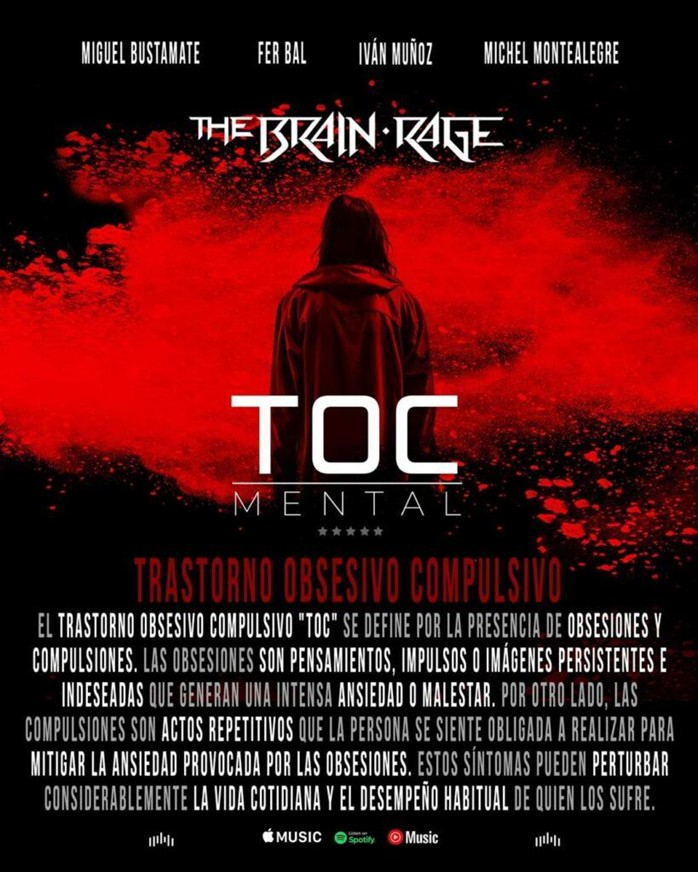

The Brain Rage emana pasión en cada uno de sus temas y su nuevo estreno, “TOC”, no es la excepción. Nos deleitan con una poderosa combinación de riffs de guitarra y una base rítmica sólida que incluye un bajo prominente y una batería contundente.
“TOC” nos introduce a lo complejo de la mente humana y a uno de los trastornos cuyas causas siguen siendo un misterio para muchos. La banda fusiona la intensidad del metal con la capacidad de transmitir un mensaje de crítica social relevante y actual.

REFLEXIÓN Y PODER: LA ESENCIA DE THE BRAIN RAGE
En resumen, este tema captura la esencia de una banda que no teme abordar temas difíciles. Es una pieza que es tan reflexiva como poderosa, diseñada para dejar al oyente sumergido en un estado de análisis personal.
ESCUCHAR "TOC" EN SPOTIFY